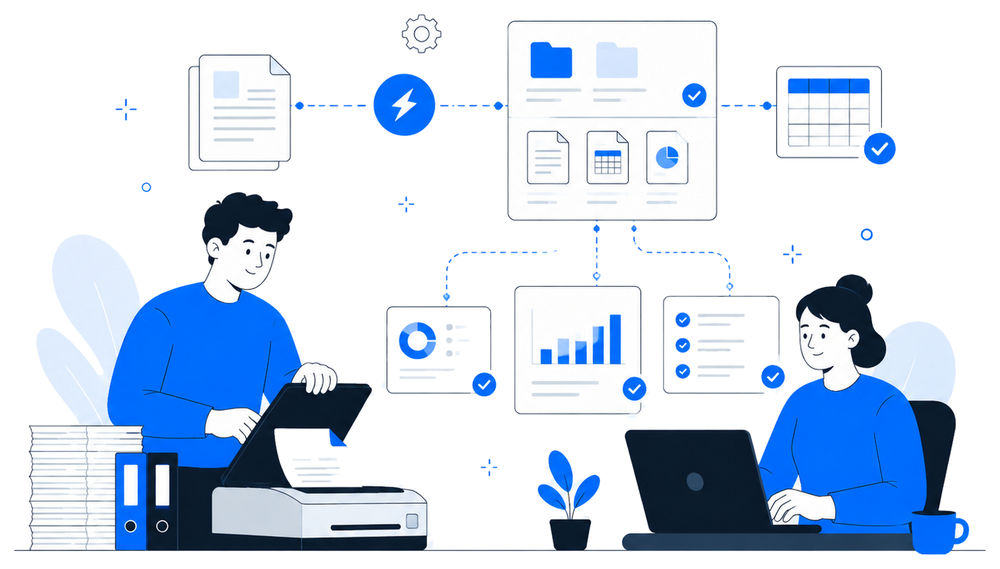
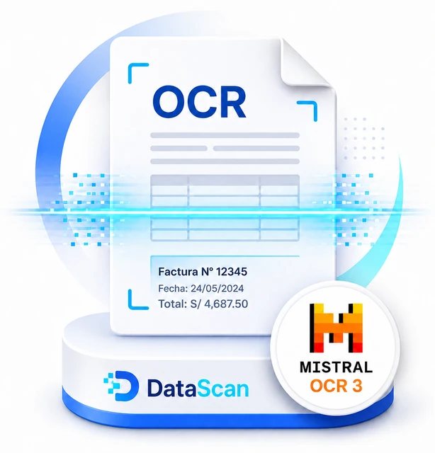
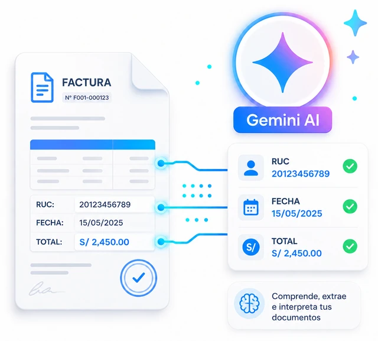
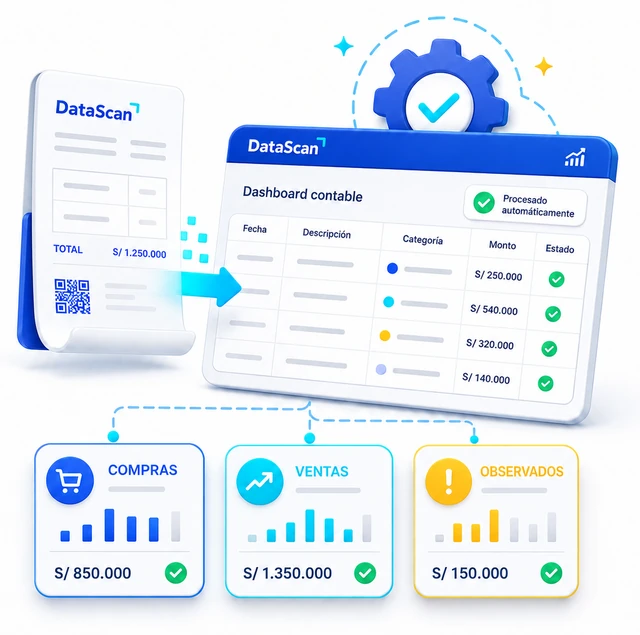

1
Sube tus documentos
Regístrate para la beta y, si eres seleccionado, recibirás acceso al bot de prueba.
DataScan AI está en fase beta. Regístrate para solicitar acceso anticipado y probar el bot cuando se habiliten nuevos cupos.
De tus documentos a un Excel organizado, sin digitación manual.
Regístrate para la beta y, si eres seleccionado, recibirás acceso al bot de prueba.
Usa OCR e IA para reconocer fechas, RUC, razón social, montos, IGV y totales.
Obtén registros de compras, ventas y observados listos para revisión.
DataScan AI convierte comprobantes en registros contables listos para revisar, reduciendo el trabajo manual al organizar la información clave en Excel.

DataScan AI combina OCR avanzado y modelos de IA para convertir comprobantes, recibos y documentos financieros en información estructurada, lista para revisar y exportar a Excel.

OCR especializado con Mistral OCR 3Reconoce texto en PDFs, escaneos y fotos, incluso cuando los documentos tienen tablas, sellos, distintos formatos o calidad irregular.

Gemini AI para comprensión documentalAyuda a interpretar campos clave como RUC, razón social, fechas, montos, IGV, totales y tipo de comprobante.

Automatización contable inteligenteOrganiza los datos extraídos en compras, ventas y observados para reducir digitación manual y acelerar la revisión inicial.
DataScan AI aún está en fase beta. Los planes estarán disponibles pronto para usuarios regulares, estudiantes, independientes y empresas.
Documentos ilimitados por tiempo limitado
Para mayor volumen y control interno
Déjanos tus datos y te enviaremos el acceso beta por correo 1 hora después del registro. La beta está pensada para estudiantes, independientes y pequeños negocios que quieran digitalizar documentos con IA.
No. DataScan AI automatiza la extracción y organización inicial de documentos, pero la revisión final debe hacerla el usuario o un profesional contable.
Facturas, boletas, recibos, notas de crédito, notas de débito y otros comprobantes compatibles.
DataScan AI está pensado para trabajar con documentos contables de forma ordenada y controlada. En la beta, la recomendación es subir solo archivos necesarios para la prueba y evitar documentos extremadamente sensibles hasta la versión final con políticas completas de privacidad.
Puede servir como apoyo para organizar comprobantes y acelerar la revisión contable. Sin embargo, la declaración de impuestos debe ser revisada por el usuario o por un profesional contable antes de enviarse a SUNAT.
DataScan AI se encuentra en fase beta privada. Al registrarte, recibirás por correo el enlace de acceso al bot 1 hora después del registro.
Sí. Puede procesar imágenes y PDFs escaneados mediante OCR.
El bot genera un archivo Excel organizado con registros de compras, ventas y observados.
El resultado debe revisarse antes de usarlo. DataScan AI ayuda a extraer y ordenar datos, pero si detecta un campo dudoso o una lectura irregular, el usuario debe validarlo y corregirlo en el Excel final.
Sí. La beta está orientada a facturas, boletas, recibos por honorarios, recibos de servicios y otros documentos financieros que puedan convertirse en datos estructurados.